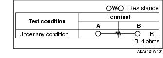

1. Inspect for resistance between the door speaker terminals.

-
• If there is any malfunction, replace the door speaker.

2. To verify that the door speaker outputs sound, apply voltage to the door speaker and release using a 1.5 V battery.
-
• If sound is not output, replace the door speaker.